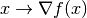

Getting Started
Working with ODL
Developer zone
Useful facts
API Reference
log10_func.
gradient
Gradient operator of the functional.
Notes
The operator that corresponds to the mapping

where is the element used to evaluate derivatives in a direction by .
 by
.
by
.